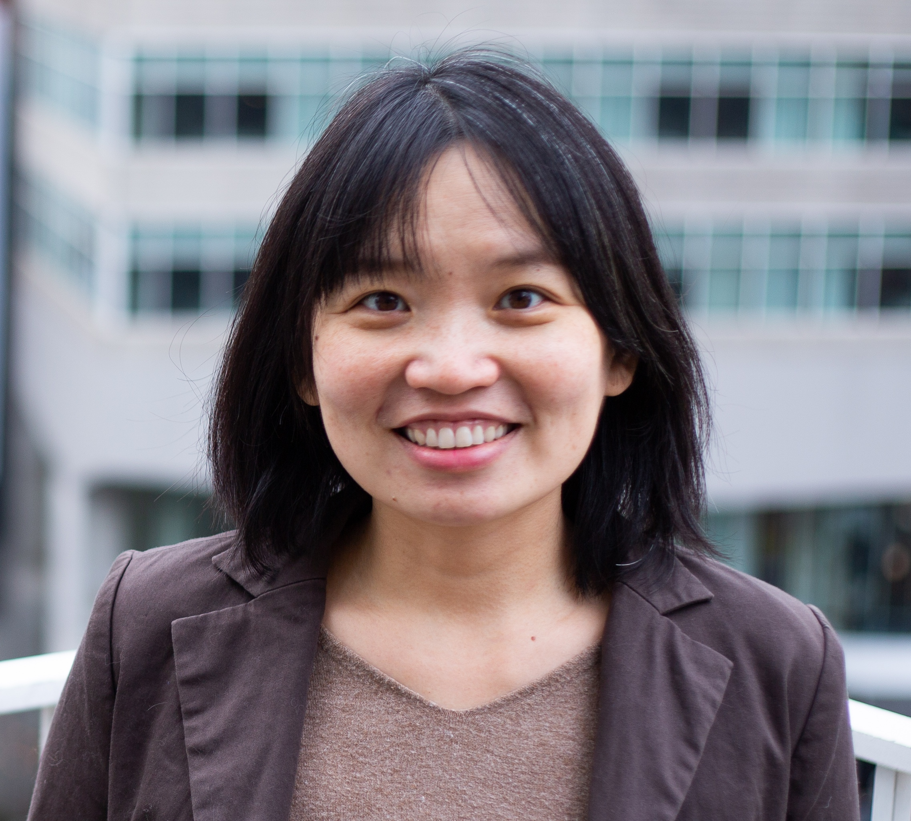

Wen-Wei Liang, PhD
Assistant Professor
Department of Pediatrics
Baylor College of Medicine
Research Vision Scholar
Texas Children's Hospital
Wen-Wei began her research career at Academia Sinica in Taiwan, where she studied the molecular mechanisms underlying RNA splicing fidelity. During her Ph.D. at Washington University in St. Louis, she developed computational approaches to investigate gene fusions and the epigenetic landscape of cancer, including DNA methylation and chromatin accessibility. As a postdoctoral researcher at the New York Genome Center, she expanded into CRISPR-based functional genomics, leading transcriptome-scale Cas13 screens to systematically characterize lncRNA functions.
Born and raised in Kaohsiung, Taiwan, Wen-Wei loves bubble tea (珍珠奶茶) so much that she named her two cats Pearl (珍珠) and Milktea (奶茶). Outside the lab, she enjoys rock climbing and reading, and hopes to visit every national park in the United States.